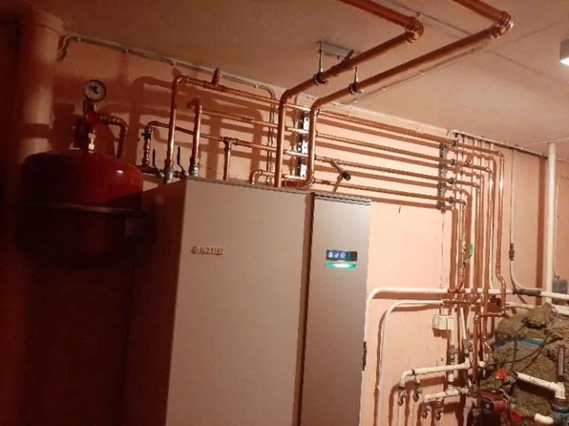

Rätt lösning.
Hela vägen.
Vatten, värme och avlopp för privatpersoner och företag i Kiruna med omnejd.
Vatteninstallationer
Vattensystem som är anpassade till byggnaden och hur den används. Vi tar oss an både mindre installationer och större uppdrag för hem och företag.
- Installation av vattensystem
- Rördragning och anslutningar
- Arbete enligt gällande regler

Värme som
gör skillnad.
Vi installerar och underhåller värmesystem. Tillsammans ser vi över vilken lösning som passar dina behov och fastighetens förutsättningar.
- Värmepumpar och fjärrvärme
- Vattenburen golvvärme
- Radiatorer och underhåll

Avlopp som
fungerar.
Vi arbetar med installation och service av avloppssystem. Behöver du hjälp med avloppet i badrummet eller i fastigheten? Kontakta oss så går vi igenom behovet.
- Avloppsinstallationer
- Service vid avloppsproblem
- Lösningar för hem och fastigheter

Ditt badrum.
Dina förutsättningar.
Vi hjälper till med VVS-installationer och reparationer i badrum. Från rören bakom ytorna till delarna du använder varje dag.
- VVS för nya och befintliga badrum
- Installation och reparation
- Service av vatten och avlopp

Börja med
ett bra samtal.
Osäker på vilket system du ska välja? Vi erbjuder konsultation och hjälper dig att planera ditt VVS-projekt.
- Genomgång av dina behov
- Vägledning i val av system
- Planering inför installation

Vad kan vi
hjälpa dig med?
Ett nytt projekt eller något som behöver ses över?
Hör av dig för rådgivning och en kostnadsfri offert.